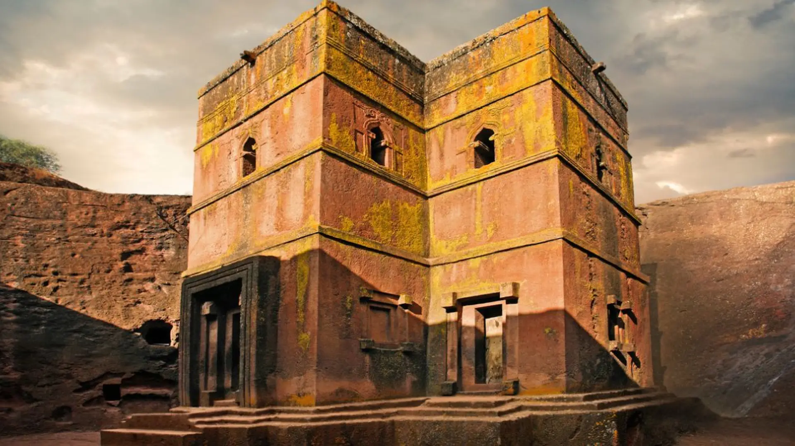
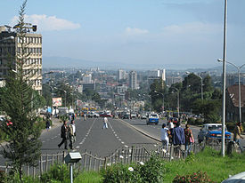
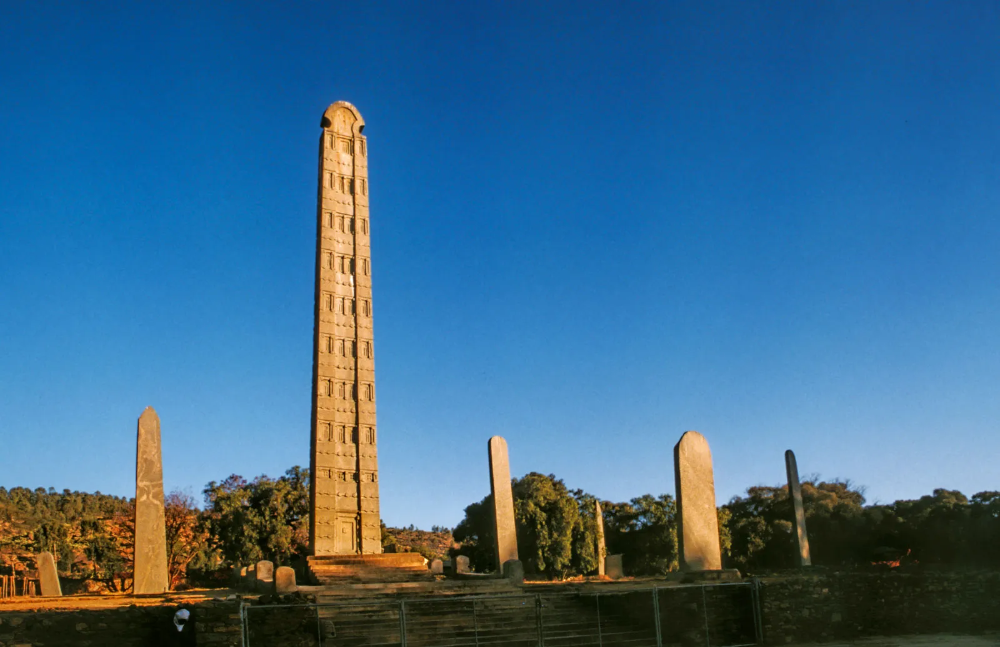
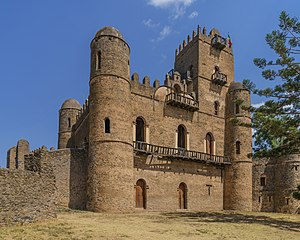
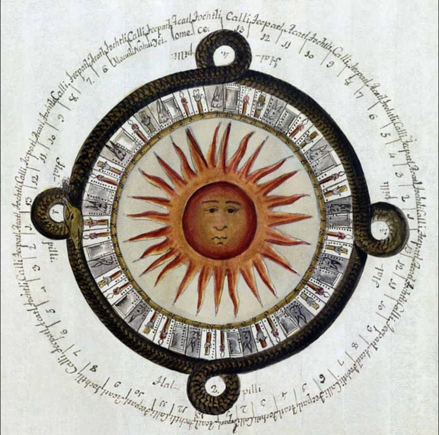
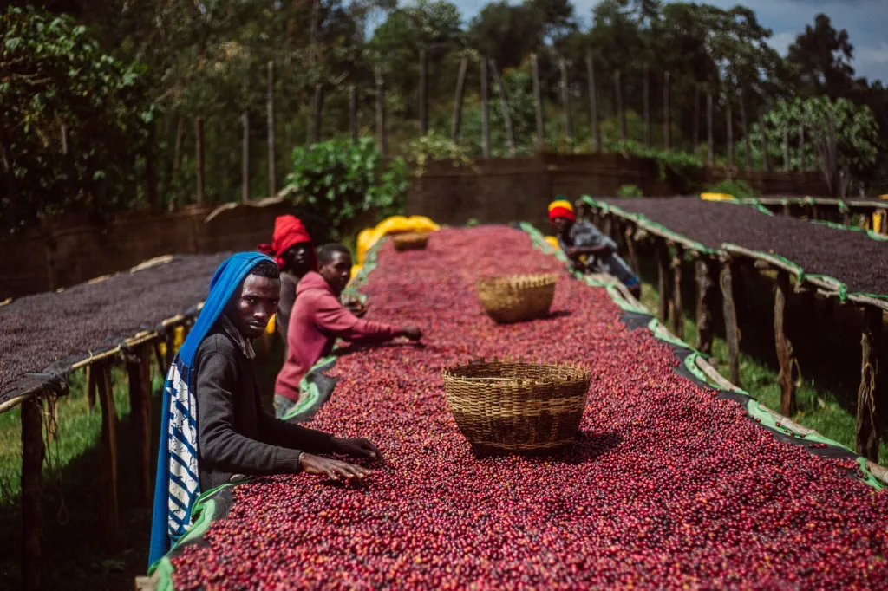

Descripcion del pais
Etiopía, oficialmente conocida como la República Democrática Federal de Etiopía, es un país sin salida al mar situado en el Cuerno de África. Su capital es Adís Abeba, una vibrante metrópolis que sirve como sede de la Unión Africana. Etiopía es conocida por su rica historia y herencia cultural, siendo una de las civilizaciones más antiguas del mundo. Es famosa por sus iglesias excavadas en la roca en Lalibela, sus castillos en Gondar y la antigua ciudad de Aksum. Además, es el único país africano que nunca fue colonizado, manteniendo su independencia a lo largo de los siglos. El país es también la cuna del café y posee una biodiversidad increíble, con paisajes que varían desde montañas escarpadas hasta llanuras áridas. Amhárico es el idioma oficial, pero hay más de 80 grupos étnicos con sus propias lenguas y dialectos.
5 lugares para ir de vacaciones
1. Lalibela
Lalibela es uno de los destinos más sagrados de Etiopía, conocido por sus iglesias monolíticas excavadas en la roca que datan del siglo XII. Estas iglesias, como Bet Giyorgis (San Jorge), están talladas directamente en la piedra y conectadas por un laberinto de túneles y pasadizos. Lalibela es un importante lugar de peregrinación para los cristianos ortodoxos etíopes y ofrece una visión única de la historia y la arquitectura religiosa del país.
2. Adís Abeba
La capital de Etiopía, Adís Abeba, es una ciudad dinámica y cosmopolita. Alberga la sede de la Unión Africana y numerosos museos, como el Museo Nacional de Etiopía, donde se puede ver el fósil de Lucy, uno de los ancestros humanos más antiguos. La ciudad también cuenta con el Merkato, uno de los mercados al aire libre más grandes de África, y el Monte Entoto, que ofrece vistas panorámicas impresionantes de la ciudad.
3. Aksum
Aksum es una antigua ciudad que fue la capital del Reino de Aksum, una de las civilizaciones más poderosas de la antigüedad. Aquí se pueden ver los obeliscos de Aksum, tallados en granito y algunos de los monumentos más antiguos del mundo. Aksum es también conocida por ser el presunto hogar del Arca de la Alianza, guardada en la Iglesia de Santa María de Sion. La ciudad ofrece una profunda inmersión en la historia y la cultura etíope.
4. Parque Nacional de las Montañas Simien
Este parque nacional, declarado Patrimonio de la Humanidad por la UNESCO, es famoso por sus impresionantes paisajes montañosos y su biodiversidad. Las Montañas Simien son hogar de especies endémicas como el gelada, el caracal y el ibex de Walia. Los visitantes pueden disfrutar de excursiones de senderismo y trekking, explorando las cumbres escarpadas y los profundos valles, mientras se deleitan con vistas panorámicas inolvidables.
5. Gondar
Gondar es conocida como la "Camelot de África" debido a sus numerosos castillos y palacios. La ciudad fue la capital del Imperio Etíope en los siglos XVII y XVIII y alberga el complejo de castillos de Fasil Ghebbi, un Patrimonio de la Humanidad por la UNESCO. Además de sus estructuras medievales, Gondar es también famosa por las iglesias decoradas con frescos, como la Iglesia de Debre Berhan Selassie, que presenta impresionantes pinturas murales.
Datos curiosos
1. Calendario Etíope
Etiopía utiliza un calendario único que tiene 13 meses: 12 meses de 30 días y un mes adicional llamado Pagumē, que tiene cinco o seis días dependiendo de si el año es bisiesto. El calendario etíope está aproximadamente siete a ocho años detrás del calendario gregoriano, lo que significa que cuando es 2024 en el resto del mundo, en Etiopía es 2016 o 2017.
2. La cuna del café
Etiopía es el lugar de origen del café. Según la leyenda, un pastor llamado Kaldi descubrió el café después de notar que sus cabras se volvían especialmente enérgicas tras comer las bayas de un arbusto. Hoy en día, el café etíope es apreciado en todo el mundo por su sabor distintivo, y la ceremonia del café es una parte integral de la cultura etíope.
3. El primer humano
Etiopía es uno de los lugares más importantes para el estudio de la evolución humana. En 1974, los arqueólogos descubrieron en el valle de Awash el esqueleto de un homínido de 3,2 millones de años conocido como "Lucy" (Australopithecus afarensis). Este descubrimiento proporcionó una valiosa información sobre nuestros ancestros más antiguos y colocó a Etiopía en el centro de la paleoantropología.
Quiz
¡Prueba tus conocimientos con este Quiz!
Gracias por participar
Tu puntaje fue: